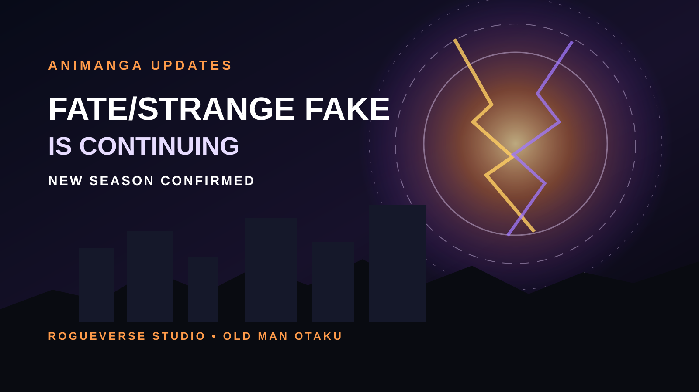

OLD MAN OTAKU / ANIME NEWS • AUGUST 22, 2026
Fate/strange Fake Is Officially Continuing After Season 1
Snowfield's broken Holy Grail War is not finished. A new Fate/strange Fake anime season has been confirmed after the 13-episode first season, but the return date and episode count are still under wraps.

Fate/strange Fake ended its first full television season with the story very deliberately unfinished. Now the production has removed any doubt about whether that continuation is coming.
A new anime series has officially been announced, accompanied by a production-announcement PV and a teaser visual carrying the English message “New Season Confirmed.” The announcement follows the conclusion of the first season, which ran for 13 episodes.
There is one important restraint for the hype machine: no premiere date, release window, or episode count has been announced for the continuation yet. This is a production confirmation, not a dated return.
The Holy Grail War still has unfinished business
Fate/strange Fake takes the familiar Holy Grail War structure and deliberately breaks it. Set in Snowfield, Nevada, the story follows an attempted recreation of the Fuyuki ritual that produces an irregular conflict filled with unusual Masters, Servants, competing agendas, and rules that do not behave the way veteran Fate viewers expect.
The TV anime itself followed the 2023 Whispers of Dawn special. Episode 1 was released early at the end of 2024, while the regular weekly run began in January 2026. By the end of its 13 episodes, the series had expanded its battlefield rather than wrapping it in a tidy bow. The final episode's “to be continued” message was a pretty loud wink. The new announcement turns that wink into an actual production commitment.
A-1 Pictures built the first season
A-1 Pictures handled animation production for the first season. Shun Enokido and Takahito Sakazume directed, Daisuke Ohigashi handled the screenplay, Yukei Yamada served as character designer and chief animation director, and Hiroyuki Sawano composed the music.
The staff lineup mattered because strange Fake has to juggle a particularly crowded version of the franchise's usual formula. It is not simply one Master-Servant pair moving through a linear tournament. The series thrives on intersecting factions, false assumptions, explosive Noble Phantasms, and characters who sometimes seem to be participating in entirely different wars.
At the time of this article, the continuation announcement confirms the anime is moving forward, but it does not yet give RogueVerse enough verified information to claim a returning staff roster beyond the first season's credits. Until the production publishes the next season's detailed staff listing, those first-season credits should not automatically be treated as confirmation for every role on the new production.
Why the confirmation matters
For viewers, the biggest value of this announcement is simple: the adaptation has permission to keep unfolding instead of leaving a sprawling Grail War suspended after one cour-sized run.
That is especially important for strange Fake. Its appeal is escalation through collision. Characters who initially seem disconnected gradually begin pushing against the same supernatural machinery, and the story becomes more interesting as the boundaries between separate conflicts collapse. A continuation gives that structure room to pay off.
It also keeps one of the most visually aggressive modern Fate projects alive. The first season leaned into large-scale magical spectacle while still spending substantial time on the personalities and motives underneath it. For a franchise built around legendary figures crashing into modern magecraft, that balance is the whole meal.
What we still do not know
The announcement leaves three major questions open: when the new season premieres, how many episodes it will contain, and exactly how the returning production staff will be configured.
Those blanks matter. Until an official date appears, any specific 2027 or later window should be treated as speculation. The same goes for calling the project a particular cour length. “New Season Confirmed” is exciting enough without stapling imaginary calendar pages to it.
The Old Man Otaku take
This is the kind of sequel announcement that feels less like a surprise and more like the production finally stamping the paperwork on what the story was already screaming.
Fate/strange Fake is built to get bigger, stranger, and less obedient to the normal Holy Grail War blueprint as it goes. Thirteen episodes were enough to light the fuse. They were never enough to pretend the fireworks were finished.
The fake Grail War survived Season 1. Now the real question is how much stranger Snowfield gets when the anime returns.